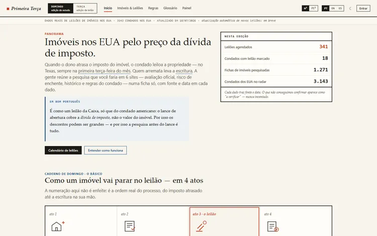
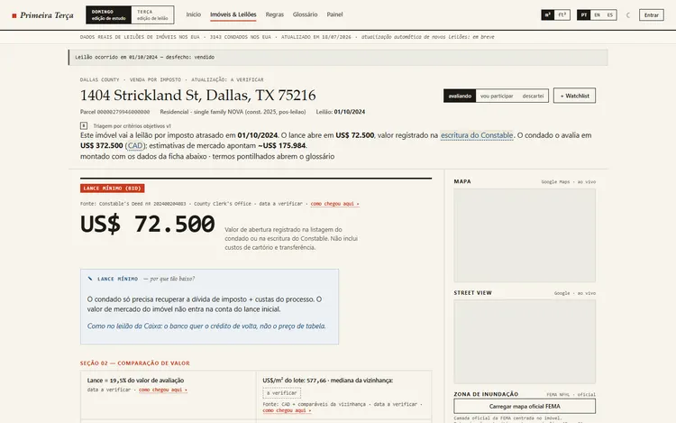
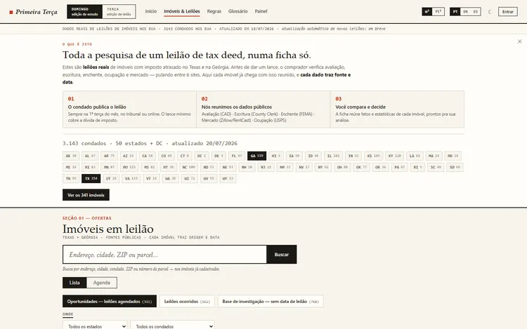

Case 03 · US real-estate data product
Primeira Terça, fragmented public records, one decision-ready page
Tax deed auctions, where a US county sells a property to recover unpaid property tax, are public record, but scattered across thousands of separate county websites in formats that rarely match. Primeira Terça, designed, built and operated end to end by Red Owl's agent fleet, turns that fragmented public record into one audited page a buyer researching from Brazil can act on.
3,143
counties mapped
1,271
property pages live
<1 wk
per new state
The challenge
Turn scattered public records into an audited decision.
Tax deed data is public, but it is messy: every county publishes it differently, on different sites, in different formats, and often out of date. The challenge was to turn that fragmented public record into something a buyer could actually use to decide, with every figure audited rather than merely filled in, and to do it while researching from Brazil, a market with no local presence on the ground.
The approach
Map the whole country first, then go deep county by county.
Coverage came before depth: all 3,143 US counties were mapped for auction availability and the rules of all 51 jurisdictions (50 states plus Washington, DC) were catalogued, before building out full property pages in the two states where the data pipeline was ready, Texas and Georgia. An AI assistant on the site answers strictly from the property database and cites its source, informing rather than opining: when a question falls outside what is on record, it says so instead of guessing.
How every delivery is governed
Five steps, every time: nothing ships on one agent's say-so.
How it works
Six scattered sources, folded into one page.
Where the data comes from
One decision-ready property page
Every fact on the page carries its source and the date it was checked.
The buyer would otherwise have to visit each of these sources separately, on a different site, in a different format.
Before
Fragmented public records across counties
After
One decision-ready page per property, 1,271 live
Six-step due diligence, on one page
1
Opening bid
2
Official appraisal
3
Map
4
Flood risk
5
Market estimate
6
Registered deed
The terms, in plain language
TAX DEED AUCTION
Unpaid tax, sold at auction
When a property owner falls behind on property tax, the county can auction the property to recover the debt. The opening bid usually only covers the unpaid tax, not the property's market value.
NON-DISCLOSURE STATE
Texas hides the real sale price
Texas law does not require the actual final sale price of a past auction to be published, so the number most buyers want is not public by default.
DEED READING BY AI
Multimodal AI (image-reading AI)
To recover that hidden price, the registered deed itself, a scanned document, is read directly by AI that can read images, not just text.
DETERMINISTIC ASSISTANT
Answers only from the record
The AI assistant on the site answers only from the property database and always cites its source. When a question falls outside what is on record, it says so instead of guessing.
Numbers
What is mapped, catalogued and live today.
3,143
US counties mapped by auction availability
51
state jurisdictions catalogued, 50 states plus DC
1,271
property pages live, Texas and Georgia
<1 wk
list to full pages, per new state added
Screenshots
The site, as researchers use it today.



How it was verified
Why the data can be trusted, not just believed.
The verification loop
↻ sampling runs continuously, not once
CHECKED AGAINST THE ORIGINAL
Sampled property pages are re-verified against official county and market sources through independent channels, not simply re-read from the same feed that filled them in.
VERIFICATION AS INTERFACE
Every data point on a property page carries its source and the date it was last checked. Hovering any data point shows its full verification history.
PROVEN UNDER REAL FAILURE
When a county rescheduled an auction, re-collection caught the change before a user could see the wrong date. When federal flood-map servers went down during a shutdown, official mirrors covered the gap under cross-verification.
STATUS TODAY
Live for the current auction cycle in Texas and Georgia, with national county coverage already mapped for the states that follow.
Talk about a project like this
Want a data product like this for your market?
Tell me about your project.